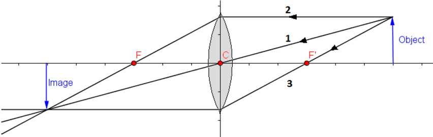
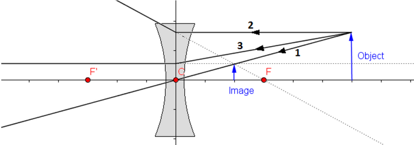
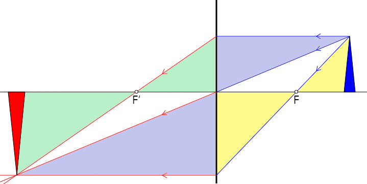

Converging & Diverging Lenses
Lenses form images by refraction as the light passes from the air into the lens, and back into the air.
- In the thin lens approximation, the two consecutive refractions are considered as a single change in the direction of the light ray.
- Lenses can be shaped to focus paraxial incident rays to a focal point just as mirrors do.
- A converging lens has a real focus while a diverging lens has a virtual focus.
- Because light travels through the lens (in contrast to a mirror), there are focal points on both sides of the lens.
- The primary focus is on the opposite side of the lens from the object when it is real, and on the same side when it is virtual. The secondary focus is always opposite from the primary focus.
- The index of refraction for most lenses is slightly different for different wavelengths (colours) of light. This means that the focal point will be slightly different for different wavelengths as well. This phenomenon is called chromatic aberration.
Principal Ray Diagrams
Light rays that pass through the optical centre of a lens will not change direction because the two sides of the lens are parallel at this point.

The three principal rays for a thin lens are as follows...
- An incident ray through the optical centre (C) will not be refracted at all.
- A paraxial ray will be refracted along a line through the primary focus (F).
- An incident ray that is aligned with the secondary focus (F’) will refract parallel to the principal axis.

Equations
We can identify pairs of similar triangles on the principal ray diagram to derive equations for the converging and diverging lens, just as we did for curved mirrors.

Converging and diverging lenses obey the same equations as concave and convex mirrors: $$\frac{1}{f} = \frac{1}{d_o} + \frac{1}{d_i}$$ $$m = \frac{h_i}{h_o} = -\frac{d_i}{d_o}$$